←
Go back
🎨
Memory Sketchbook
art, 2018


|
←
Go back
|
||||
|
🎨
Memory Sketchbook
art, 2018
|
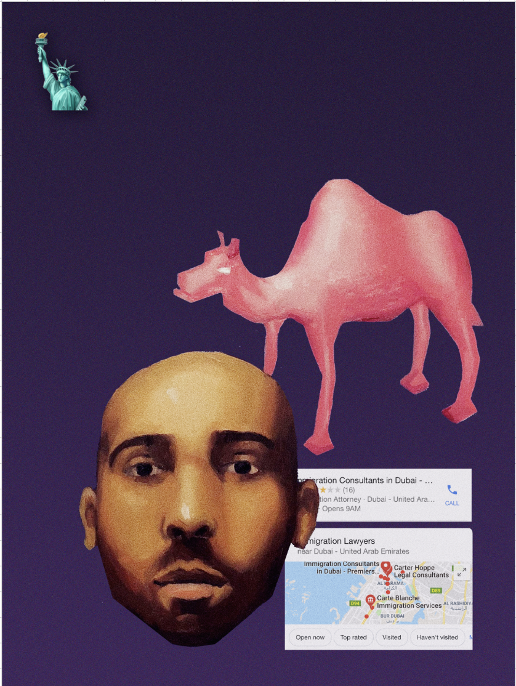 | |
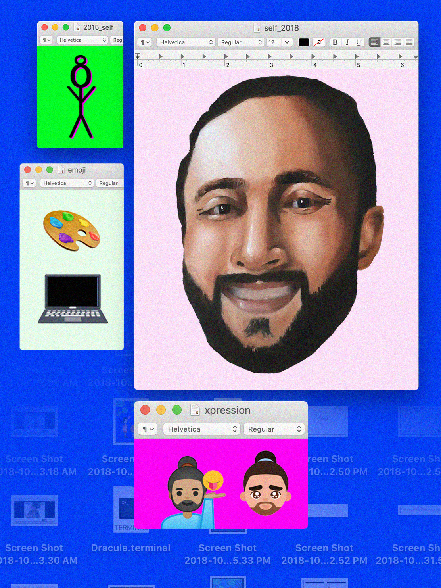 | |
| 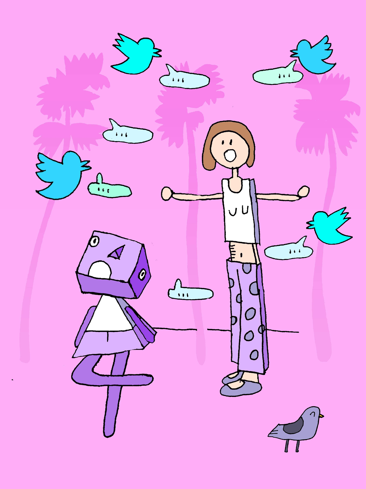 | 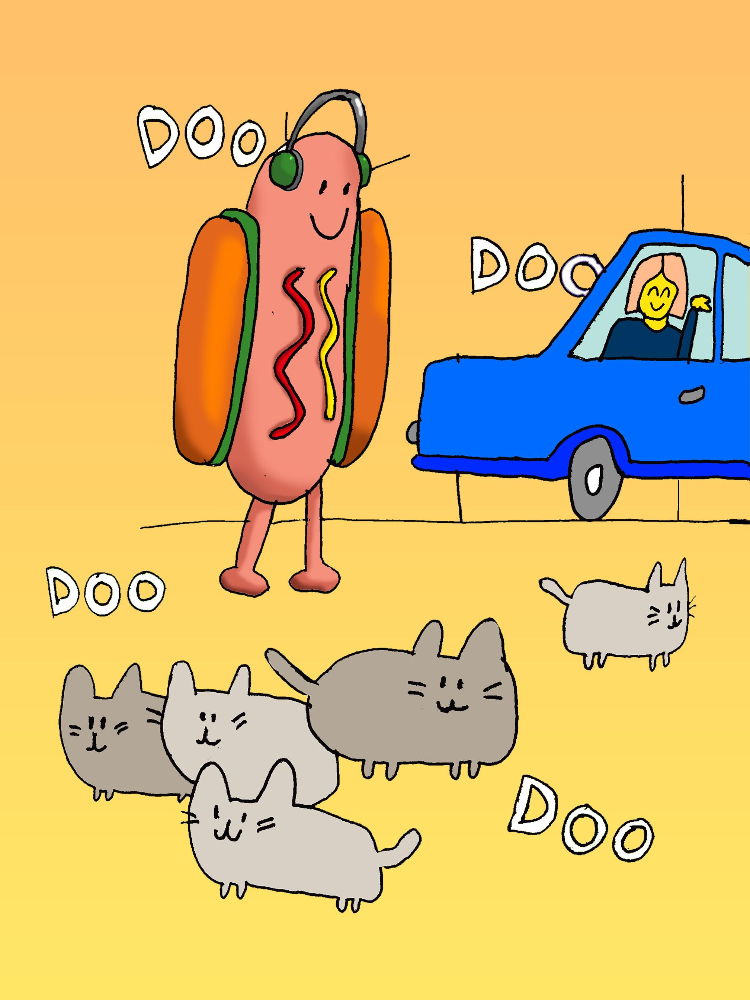 | 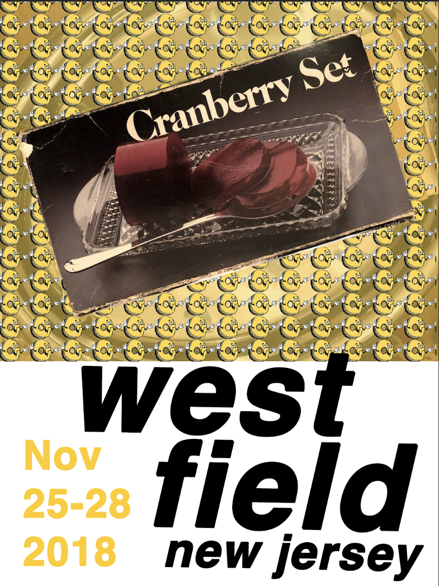 | |
|
| This is a small selection of works from my memory sketchbook. Each of these sketches started from a memory from my past. I use oil paints, digital collaging, text, and found imagery from the internet to interpret that moment and represent the important elements of it visually. I do at least 10 versions of each sketch, to explore the various ways I can interpret and contextualize my own memories. I often hang the resulting collages in my room, and live with them. This process is meant to help me cement these moments in my own mind, so that they can be more vividly recalled and are recalled more often. The inspiration for this work came from neuroscience, where I learnt that repition, emotional relevance, and focus are all key components in memory forming. | ||||
| Instagram experiments | 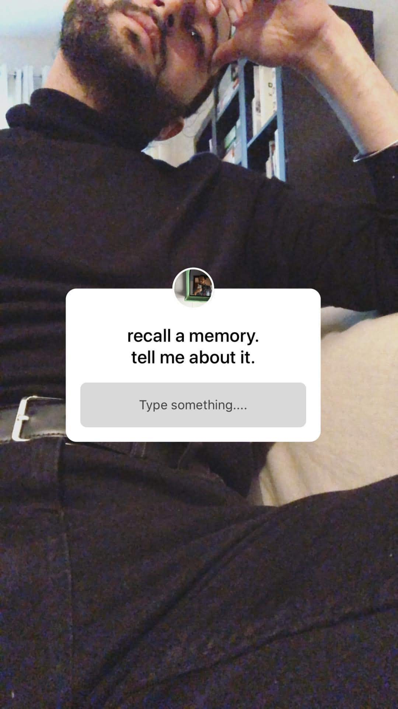 | 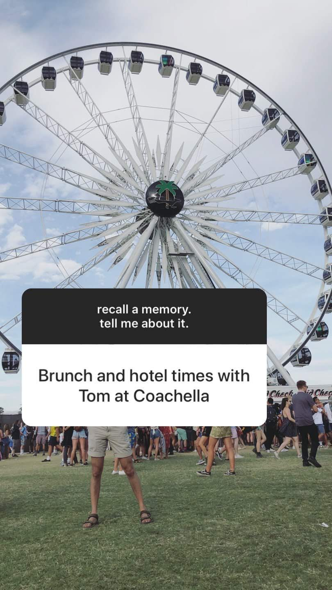 | 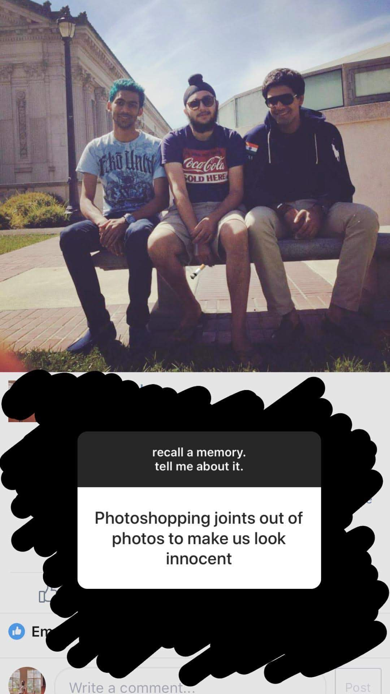 | |
| 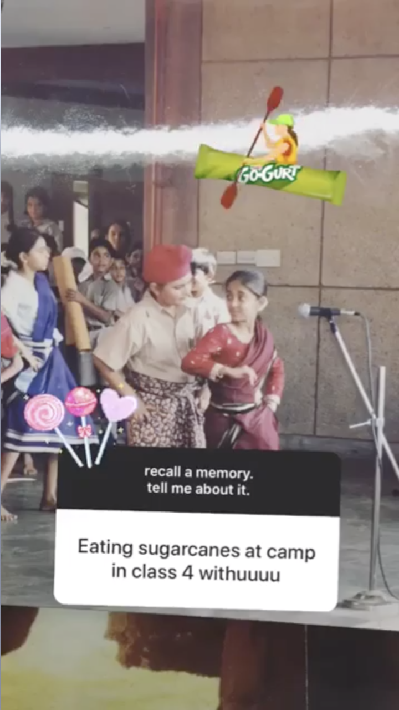 | 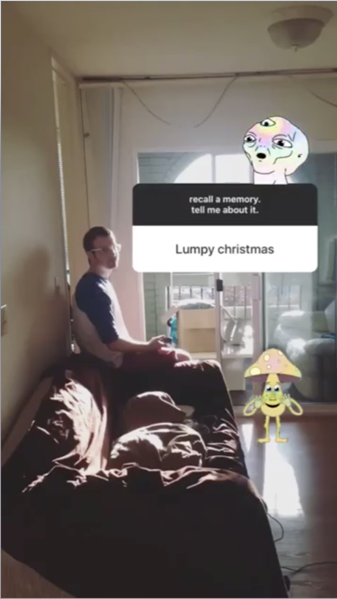 | |||
| 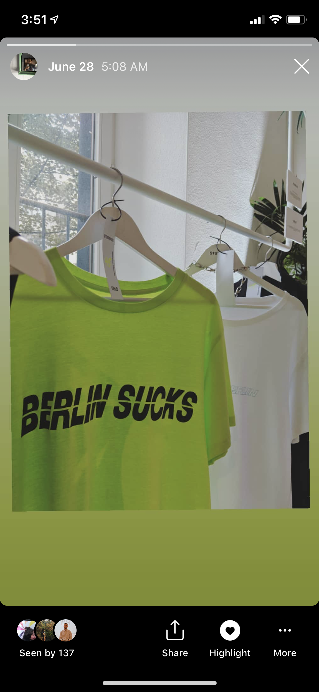 | 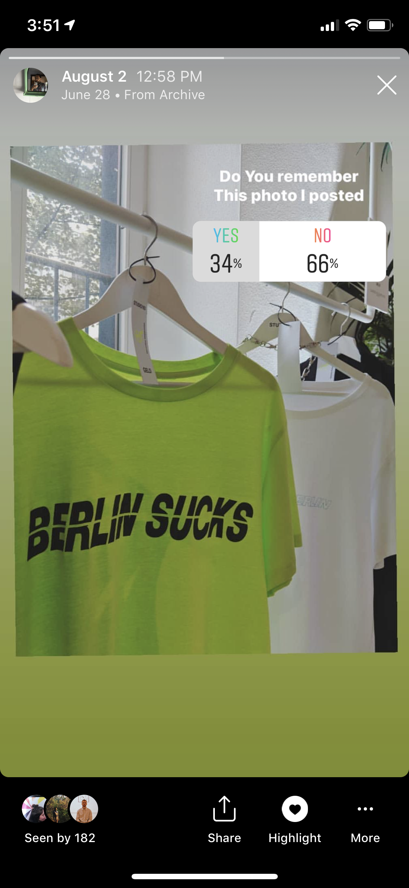 | 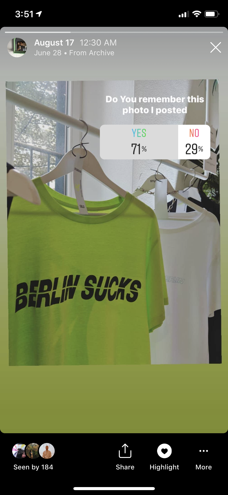 | 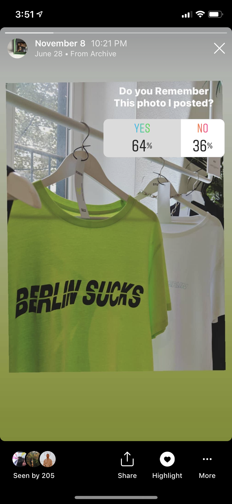 | |
| In addition to making my own work around memories, I like to interact with my followers and analyze their responses to memories. In these two instagram experiments I used Instagram as a way to guage people's responses to a prompt on the subject of recall. In the first (top row, middle row) I ask my followers for a moment that they've shared with me. I then find a relevant photo, and repost that moment back to my story, encouraging more responses. In the second (top row), I have reposted the same photo over many months and have asked how many people remember that I've posted it. | ||||